Unanswered OIL asked at the first sign-off
Round 2, drawn 22 Nov 26 on the real app at a desktop's size and at your iPhone's, as you chose: the question comes when someone first presses a sign-off box. Tap any picture to see it full size.
1. Is this how it should work? Press any of the four sign-off boxes on a day with an unanswered OIL question, and the day's OIL list opens before the name goes in. Save or Later puts the name in. Later means no more asking that day. See the pictures
Recommended: yes, as drawn.
2. What should ✕ on the list do? Close the list and leave the sign-off box empty, so nothing is signed. The next press on any of the four asks again. Why
Recommended: yes, ✕ cancels the sign-off.
Today
The same example as last time: Saturday 18 Jul holds only Ranger's Training, 08:00 to 17:00, and nobody has answered its OIL question. Today the four sign, the name goes in at once, and nothing asks about OIL.
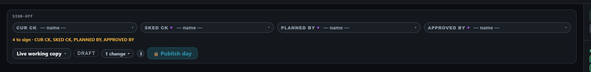
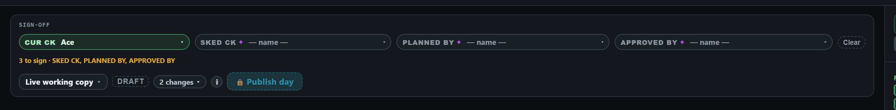
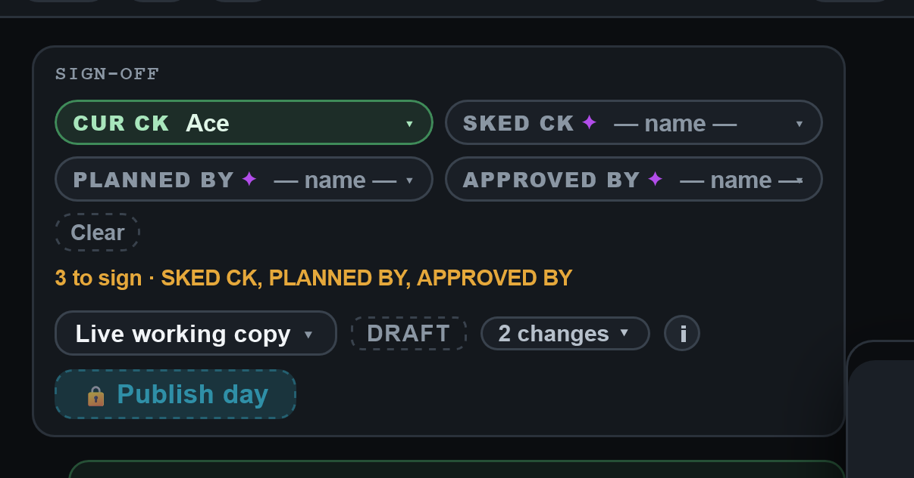
The press opens the day's OIL list
The scheduler presses CUR CK (marked 1) and picks Ace. The name waits, and the day's OIL list opens: the same list a new public holiday opens today. Two new lines say why it is asking now and what Later does.
At the top: Asked now because an answer given after signing clears the sign-offs. Ace’s CUR CK goes in when you press Save or Later.
Beside Later and Save: Later signs without an answer: nobody on it earns OIL, and Saturday won’t ask again.
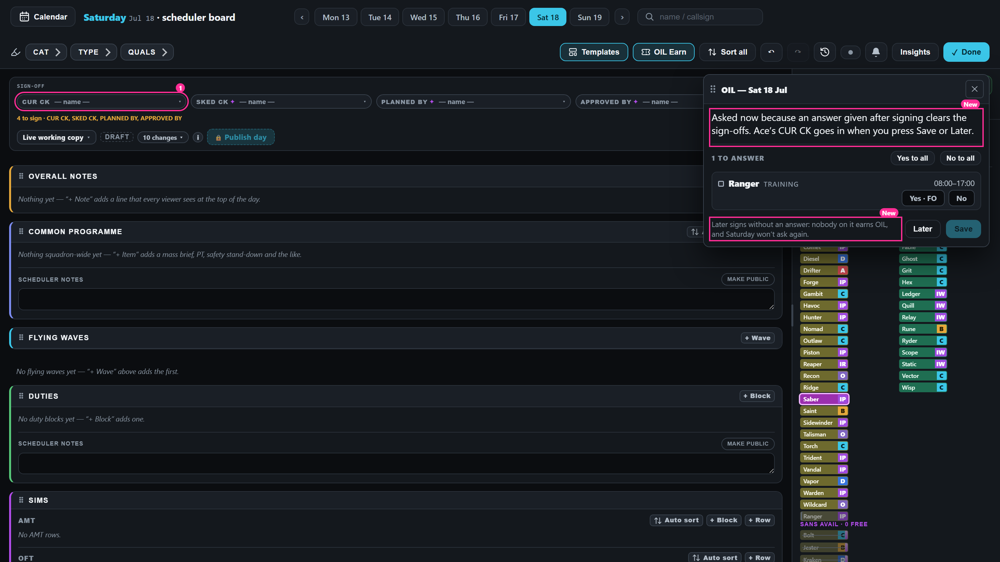
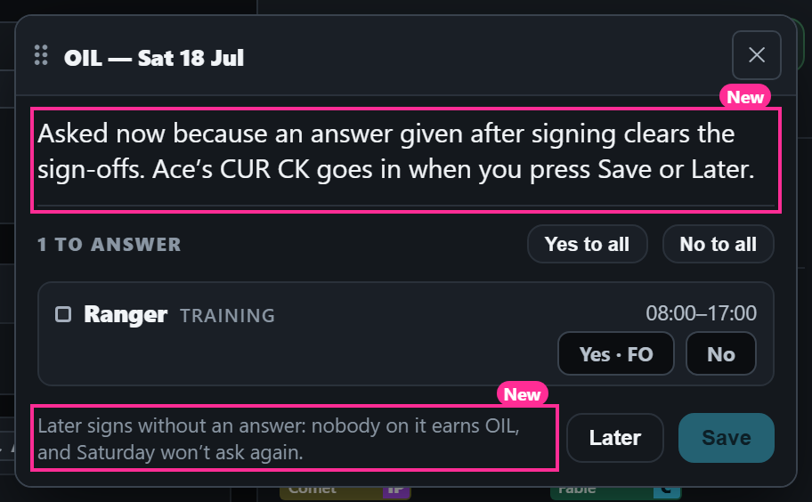
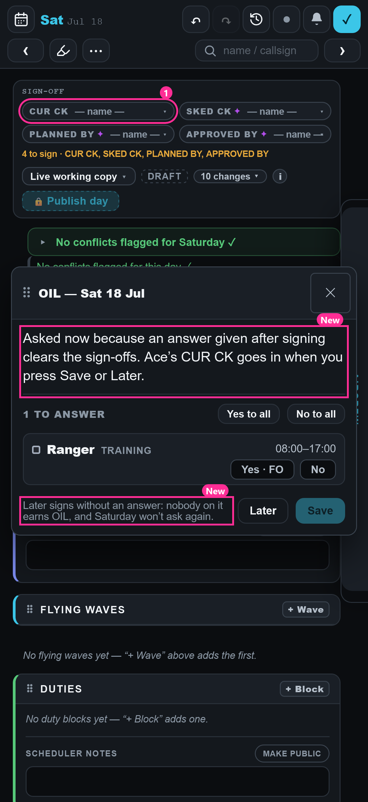

What each answer leaves
Save, with Yes · FO picked. The answer goes in first, then Ace's name. The name stays, because nothing changes after it.
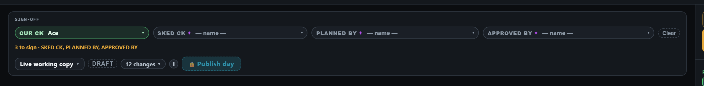
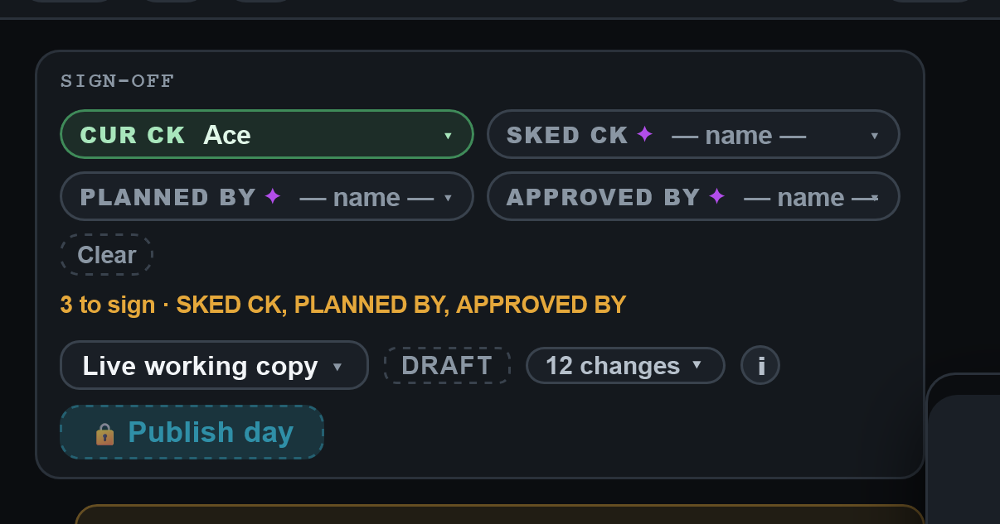
Later. Ace's name goes in without an answer. The other three boxes then sign without asking.
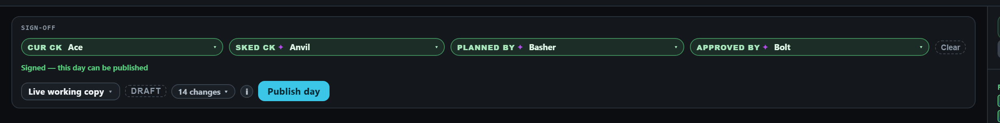
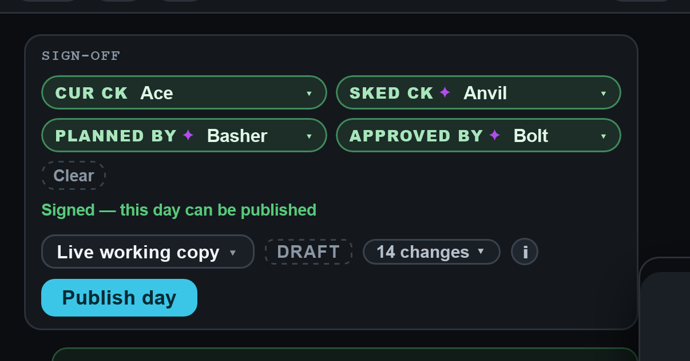
Then Publish day. The note names the input, in the words from last round:
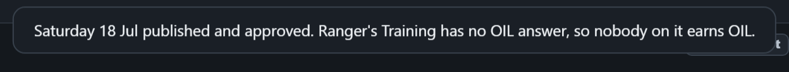

Question 2: closing the list with ✕
Later says "sign anyway". ✕ (or Escape) says "I didn't mean to sign yet". So ✕ leaves the box empty and signs nothing, and the next press on any of the four asks again. Otherwise a scheduler who closes the list to check something would find the day signed with no answer.
The alternative is for ✕ to work like Later. That is one fewer thing to learn, but it signs the day by accident.
Found while drawing
- The list's reason line says an answer after signing clears the sign-offs. I checked this in the code: each signature covers the day's OIL answers, so a later answer drops all four names. That is why the list comes before the name.
- To open the list for these pictures I first tried "Switch to this plan" on the unpublished Saturday. It put Ranger's Training row back on the schedule, but the input itself stayed rejected, so the OIL question never opened. I've noted it to look into separately. It doesn't change this design.
- "10 changes" and "14 changes" in some pictures come from how the Saturday was set up for drawing. They are not part of the design.
Which pictures are real: "Real" pictures show the app exactly as it draws itself, and every button in them was pressed in the app. "Real window, two lines drawn in" shows the app's own OIL list window with the two pink-outlined lines added. "Words drawn in" shows the app's own note with its words changed. The pink outlines, the "New" tags and the number 1 are not part of the design. To get the list open over an unsigned Saturday for these pictures, the day was published, the Training taken off, the Original loaded back (which opens this list today), and the day unpublished again. The first round's page, with options A and B, is kept in the project.